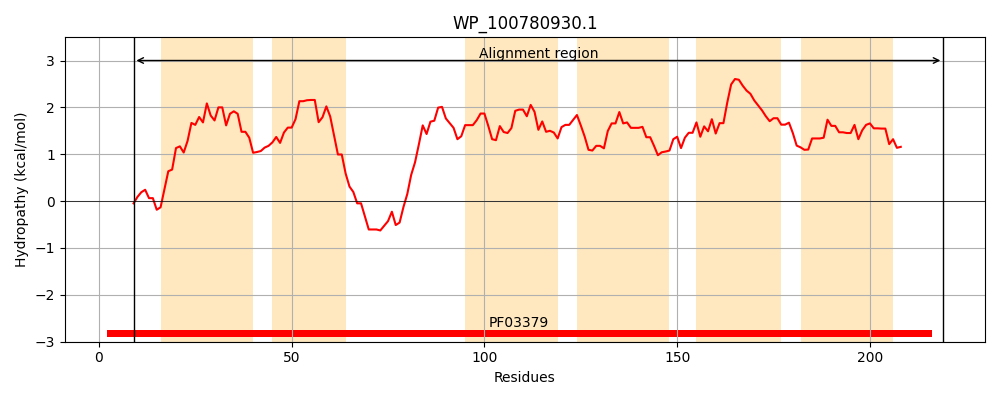
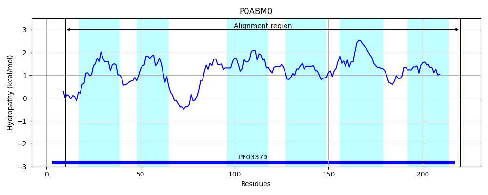
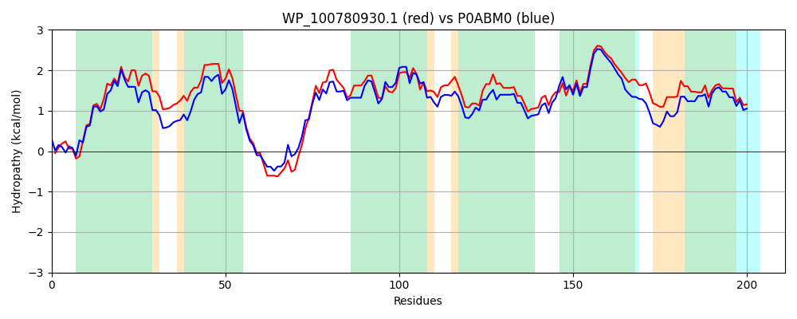

Hit Accession: P0ABM0
Hit TCID: 3.A.1.107.3
Hit Description: gnl|BL_ORD_ID|8716 gnl|TC-DB|P0ABM0|3.A.1.107.3 Heme exporter protein B - Escherichia coli O157:H7.
Mach Len: 211
e:0.000000
Query TMS Count : 6
Hit TMS Count: 6
TMS-Overlap Score: 6.300000
Predicted Substrates:CHEBI:5651;ferroheme b
BLAST Alignment:
Score: 766 , Bit scores: 299 bits, E-value: 3.0e-104, Alignment length: 211, Percentage identity: 72
Query: 9 ELRLAWRSGAEILNPLWFFLIVITLFPFGVGAAPQLLAQIAPGVVWVAALLAALLVMDRLFRDDWQDGSLEQLLLLPTPLAAVVLVKVVAHWMMSGLPLLIVSPLAALLLGMSLHDAGVLALTLLLGTPTLSFLGAVGVGLTVGLKRGGVLLSLLVLPLAVPLLIFATAACQAAAAGLSVSGYLAMLAAFLTASATLCPFATAAALRLTVQ 219
ELR+A+R AEI NPLWFFLIVITLFP +G PQLLA+IAPG++WVAALL++LL ++RLFRDD QDGSLEQL+LLP PL AVVL KV+AHWM++GLPLLI+SPL A+LLGM ++ V+ALTLLLGTPTL FLGA GV LTVGLKRGGVLLS+LVLPL +PLLIFATAA AA+ L V GYLA+L A L +ATL PFATAAALR+++Q
Sbjct: 10 ELRVAFRHSAEIANPLWFFLIVITLFPLSIGPEPQLLARIAPGIIWVAALLSSLLALERLFRDDLQDGSLEQLMLLPLPLPAVVLAKVMAHWMVTGLPLLILSPLVAMLLGMDVYGWQVMALTLLLGTPTLGFLGAPGVALTVGLKRGGVLLSILVLPLTIPLLIFATAAMDAASMHLPVDGYLAILGALLAGTATLSPFATAAALRISIQ 220 | Protein Hydropathy Plots: |
|---|
|  |  |
Pairwise Alignment-Hydropathy Plot:
|
|---|
|  |